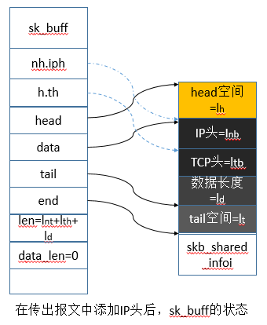
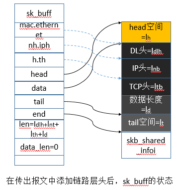
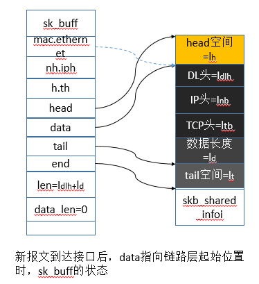
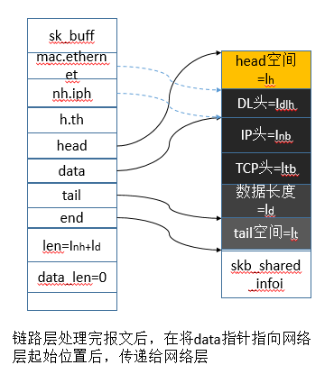
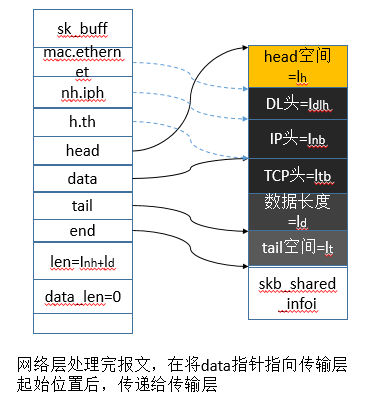
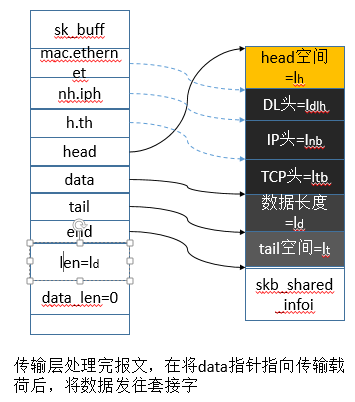

在上一篇博客说了sk_buff和协议头，这里说下如何构建向下遍历协议层时的协议头和解析向上遍历协议层时的协议头。
构建向下遍历协议层时的协议头
TCP头的添加

在TCP载荷（skb->data）前面添加TCP协议头，TCP调用tcp_transmit_skb()来为TCP数据构建一个TCP头。首先计算TCP头的长度，要考虑当前TCP连接所使用的TCP选项。一旦完成该操作，就需要调用skb_push()来为TCP头分配空间，该函数将data指针向head指针方向移动TCP头所请求的长度。如上图所示，当skb_push()返回时，skb->h.th将指向skb->data。下面是分配TCP头的源代码。
net/ipv4/tcp_output.c
IP头的添加

当添加完TCP头后，报文会被传递给IP层，这时IP层会调用ip_build_and_pkt()构建自己的IP头，并添加到报文的起始处（skb->data之前），然后发送给链路层。处理过IP选项后，接下来会计算IP头的长度，然后调用skb_push()为IP头分配空间，该函数返回skb->data指针。源代码如下所示。
net/ipv4/tcp_output.c
链路层头的添加

添加完TCP头和IP头后，报文会被传递到链路层，接下来会调用eth_header()添加MAC头。eth_header()将data指针向head指针推进ETH_HLEN字节。访问skb->data所指向的以太网头起始位置，并在此位置构建以太网头。下面是源代码。
解析向上遍历协议层时的协议头
sk_buff指向链路层驱动要处理的链路层头

当新报文到达时，要为新报文分配一个新的sk_buff，其大小等于报文的长度。sk_buff的data域指向报文的起始位置（以太网头）。如图所示，链路层驱动根据其头来发现下一个协议头，然后正确的处理这些指针。以以太网驱动的接收例程e100_rx()为例，它的环缓冲区中得到所接受报文的指针，然后从以太网头域中查找下一个协议层协议。它调用eth_type_trans()，eth_type_trans()将sk_buff的data指针向下移动以太网头的长度，使其指向IP头，该例程在sk_buff到IP backlog队列排队之前完成。源代码如下。
net/ethernet/eth.c
sk_buff指向IP层要处理的IP头

现在sk_buff处于IP bakclog队列中，由netif_receive_skb()负责处理，该函数将sk_buff从backlog队列中取出。nh.raw指向sk_buff的data域，根据nh.iph可以直接访问IP头，源码如下。
net/core/dev.c
sk_buff指向TCP层要处理的TCP头

最后，一个IP陈例程ip_local_deliver_finish()处理发往下一个协议的报文，并将sk_buff的data指针向前移动IP头的长度（包括IP选项），使其指向传输层头。因此，当sk_buff传递给传输层处理例程时，h.th指针指向传输层头的起始位置，如上图所示。源码如下。
net/ipv4/ip_input.c
最后传输层调用tcp_v4_do_rcv()处理传输层头报文。如果连接已建立，并且TCP报文中有数据，就调用skb_copy_datatram_iovec()将从skb->data的偏移量$I_dth$开始的数据复制给用户应用程序。如果由于某些原因不能复制数据给用户应用程序，就将sk_buff的data指针向前移动TCP头的长度（包括选项），然后将其发往套接字的接受队列排队。源代码和skb_buff图如下。
net/ipv4/tcp_input.c
